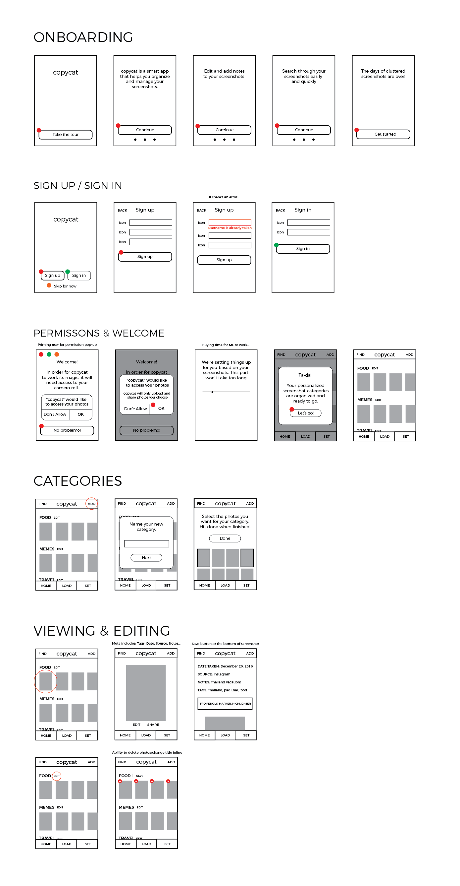

Copycat
Role: UX Designer, Visual Designer, UX Researcher
Conducted user testing, created personas, sketched and created wireframes, created hi-fi comps, prototyped with hi-fi comps
As much as people love to take screenshots, they've taken on the reputation of being convenient yet difficult to organize and keep track of. While many apps provide bookmarking features within their ecosystems, albeit closed to keep their users, none of them have sophisticated enough annotation abilities nor are any of them holistic and specific for screenshots.


To make sure that time would be well spent on this project, I had 55 people fill out a survey asking questions about their screenshot habits. The full results are on GitHub, but to summarize, people love screenshots because they are accessible offline, they can capture a lot of text, and are the easiest way to share a lot of information. On the other hand, people find that editing features for screenshots are limited, they get lost easily, and they look sloppy (in camera rolls).
Problem:
While screenshots are accessible and make sharing a lot of information at once easier, they can be difficult to organize and edit.
Solution:
An app that has machine learning, OCR and image content analysis (such as Google's Vision API) capabilities would make organizing screenshots less of a hassle. This app could also display screenshots in full-height, as opposed to square dimensions.
From there, I conducted competitive research to get inspiration for interactions and created personas based on the survey data I collected. (Note that the people in these personas are made-up). I also created wireframes for scenarios.

For the look and feel of the app, I knew I wanted something fun. Screenshots have the reputation of being "aesthetically displeasing," so I thought a cute camera mascot with feline features would brighten up what might otherwise be a bit of a boring, utilitarian app.
Wanting to get feedback for this app, I created hi-fi comps of the screens and put them into Invision where I could test for flow logic. You can play around with the prototype here. Based on the feedback, I made changes to the app, and what you see is the current version - though feel free to let me know if you find something that could make it better.
Learnings: